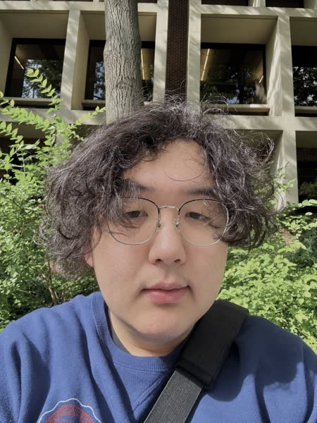

Alading Kun
M.S.E. Scientific Computing · University of Pennsylvania
Hi! I'm Alading (also known as Aladdin) Kun. I am currently pursuing an M.S.E. in Scientific Computing (SCMP) at the University of Pennsylvania and plan to graduate in December 2027. My work focuses on advanced computational techniques, numerical simulations, and machine learning applications to solve complex scientific and engineering problems.
Previously, I earned my B.S. in Computational Modeling and Data Analytics (CMDA) from Virginia Tech. During my time there, much of my research focused on data-driven approaches to complex scientific problems, using large datasets and machine learning models to predict and analyze real-world systems. I was fortunate to be mentored by Shane Ross, who played an important role in shaping my undergraduate research experience and interests.
Looking ahead, I am still figuring out the direction I want to take after graduate school. I am interested in both industry and academia, and I am keeping an open mind as I continue to gain experience and learn more about where my interests fit best.
Contact me at aladdin [at] engineering [dot] upenn [dot] edu
Publications
-
2025
Monitoring wind and particle concentrations near freshwater and marine harmful algal blooms (HABs)
Environmental Science: Advances · paper ↗
-
2024
"Is Long-distance Hiking an Emotional Roller Coaster?" Evaluating Emotions and Weather Effects on the Appalachian Trail
CHI 2024 Extended Abstracts · paper ↗
Experience
-
National Aeronautics and Space Administration (NASA), Marshall Space Flight Center · OSTEM InternAug 2026 – Present
Computer-vision pipelines for dendrite segmentation and tracking in ISS directional-solidification imagery.
-
Korea Advanced Institute of Science and Technology (KAIST) · NSF International Research Experiences for Students (IRES) Korea FellowJun – Jul 2026
A verifiable framework for LLM-assisted pedestrian route recommendation.
-
School of Social Policy & Practice, University of Pennsylvania · Graduate Teaching AssistantAug – Dec 2025
MSSP 6070: Practical Programming for Data Science.
-
Empathic Computing Laboratory, University of South Australia · Research InternApr – Sep 2025
EEG features and emotional states under the arousal–valence model.
-
Brainy n Bright · STEM InstructorJan – Aug 2025
Taught K–12 students programming, 3D modeling, robotics, and introductory AI.
-
Virginia Tech Capstone, sponsored by the National Institute of Standards and Technology (NIST) · Student ResearcherSep – Dec 2023
Nanoparticle tracking with AI, estimating particle radius within ~1 nm.
-
Notification Systems Lab, Virginia Tech · Undergraduate ResearcherSep – Dec 2023
Emotion analysis of Appalachian Trail social-media data with a RoBERTa-based model.
-
Ross Dynamics Lab, Virginia Tech · Undergraduate ResearcherJun 2023 – May 2025
Forecasting red tide–induced respiratory irritation on the Florida Gulf Coast.
-
Advanced Clinical Trial Supply Ltd · Assistant Operations Manager / IT AnalystJun 2022 – Apr 2024
Automated data processing and IT systems for regulated clinical-trial supply operations.